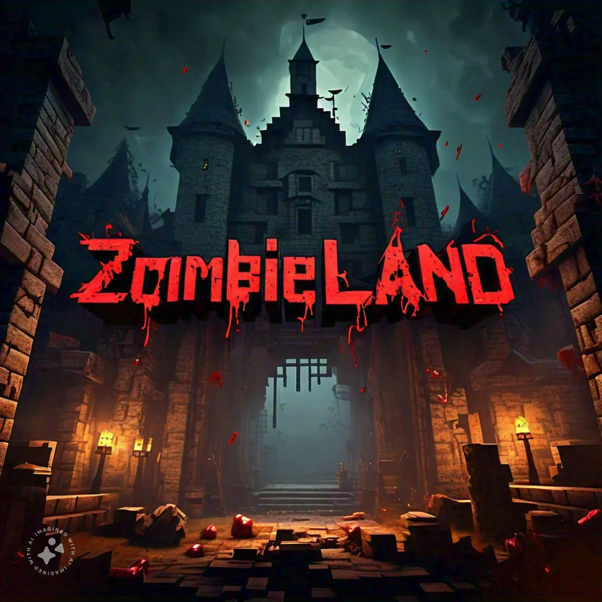
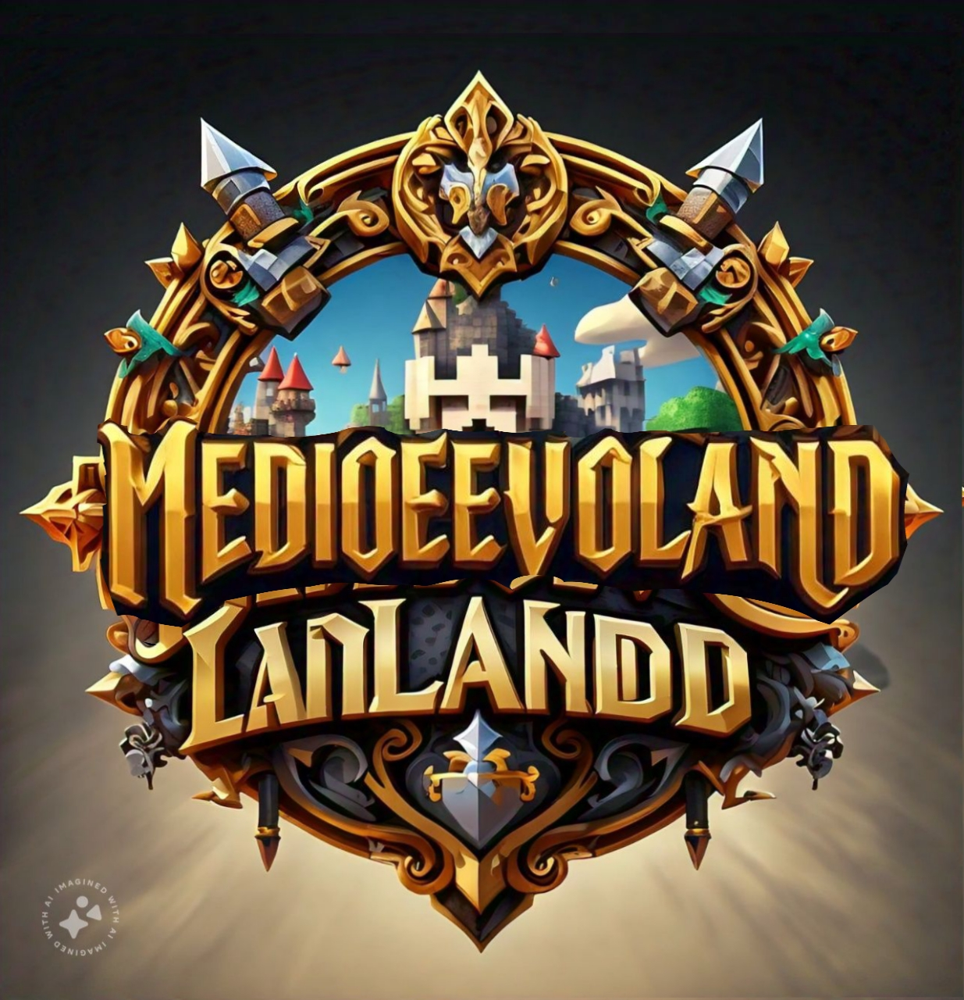
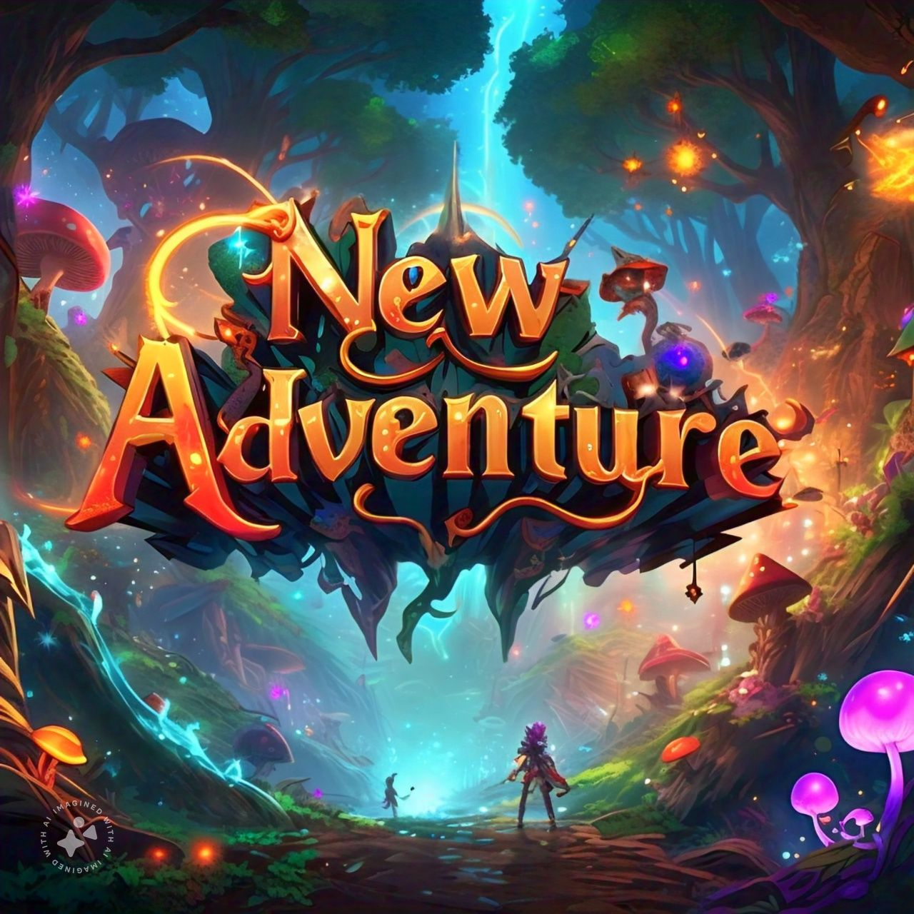
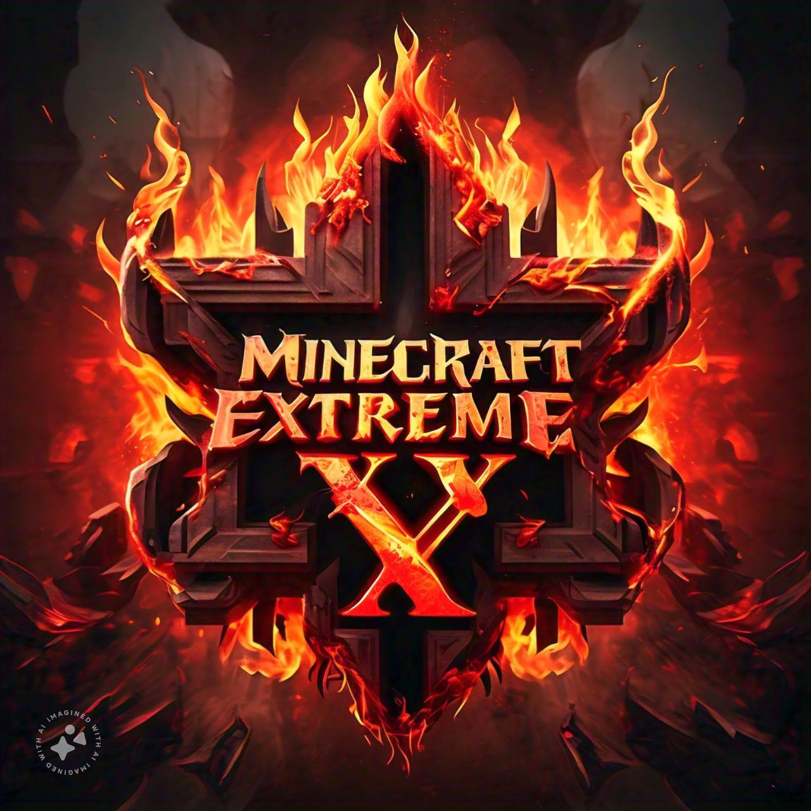

¿Buscas un servidor de Minecraft donde la diversión nunca termina? ¡AC LAND es tu destino!
Nuestro servidor, con años de desarrollo, te invita a explorar un mundo lleno de posibilidades.
Construye, crea, y vive aventuras inolvidables junto a una comunidad apasionada.
Con mods que potencian la creatividad y un enfoque en el roleplay, AC LAND te ofrece una experiencia de juego única.
¡Descubre un mundo donde la imaginación no tiene límites! En AC LAND, podrás construir imponentes fortalezas,
lanzar hechizos poderosos, patrullar las calles como un guardián de la ley o explorar las mazmorras más peligrosas.
Nuestras facciones te permitirán interactuar con otros jugadores, forjando alianzas y rivalidades
que darán forma al destino de nuestro mundo.
¿Qué esperas? ¡Únete a nosotros y vive la experiencia de juego definitiva!
ZOMBIELAND

El sol se ha convertido en un recuerdo lejano, eclipsado por una niebla gris que envuelve el mundo
en una oscuridad perpetua.
El sonido del viento ulula como un lamento, y el crujido de ramas secas bajo tus pies
es la única compañía en esta pesadilla.
AC Zombieland no es solo un lugar; es un estado mental. La infección no solo transforma cuerpos, sino también mentes.
Los zombies ya no son solo criaturas hambrientas, sino sombras retorcidas que susurran promesas vacías y te arrastran hacia la locura.
En este páramo desolado, la supervivencia es más que encontrar comida y refugio.
Es una batalla constante contra la soledad, el miedo y la desesperación. Cada noche, las pesadillas te acechan,
y cada día, la línea entre la cordura y la locura se vuelve más difusa.
¿ERES CAPAZ DE SOBREVIVIR?
MEDIOEVOLAND

Sumérgete en un mundo de castillos majestuosos, espadas relucientes y dragones rugientes.
Construye tu propio reino, recluta valientes guerreros, y embarcate en épicas aventuras para reclamar
tu lugar en la historia. En este reino medieval, cada decisión cuenta.
¿Serás un noble caballero que defiende a los débiles y busca la justicia?
¿O quizás un astuto comerciante que amasa una fortuna? O tal vez
un poderoso mago que desvela los secretos de la magia antigua. Las posibilidades son infinitas.
Construye castillos, cultiva tierras fértiles y construye una economía próspera.
Explora y descubre mazmorras llenas de tesoros, ruinas antiguas,
forja alianzas con otros reinos o declara la guerra para expandir tu territorio.
¡Únete a nosotros y forja tu propio destino!
NEW AVENTURE

Imagina un mundo donde los colores son más vibrantes, la magia fluye por cada rincón y la amistad florece.
New Adventure es ese lugar, aquí la diversión no tiene límites. Cocina deliciosos manjares en tu cocina de ensueño,
organiza fiestas inolvidables con tus amigos o simplemente relájate en un hermoso jardín mientras admiras la puesta de sol.
¿Qué te espera en New Adventure? Aventuras sin fin, explora islas misteriosas, descubre tesoros ocultos y completa misiones épicas.
Da rienda suelta a tu imaginación y construye las estructuras más asombrosas, conoce gente de todo el mundo y forja amistades duraderas.
New Adventure es más que un simple servidor, es un lugar donde los sueños se hacen realidad.
¿Estás listo para embarcarte en una nueva aventura?
MINECRAFT EXTREMO

Bienvenido a Extremo, un mundo donde la supervivencia es un lujo y la muerte acecha en cada esquina.
Aquí, Minecraft se transforma en una prueba de resistencia, donde solo los más fuertes y astutos prevalecerán.
En cada edición, un nuevo mundo hostil se despliega ante ti. Mobs modificados, más rápidos, más fuertes y más inteligentes,
te acecharán sin descanso.
Tres vidas, un objetivo y la victoria. Cada jugador comienza con tres vidas. Una vez perdidas, tu aventura llegará a su fin.
Solo los más hábiles y cautelosos podrán sobrevivir a los desafíos que este mundo extremo presenta.
Deberás luchar contra otros sobrevivientes por los recursos más valiosos y el derecho a ser el último en pie.
Solo uno saldrá victorioso.
¿Estás preparado para el desafío EXTREMO?